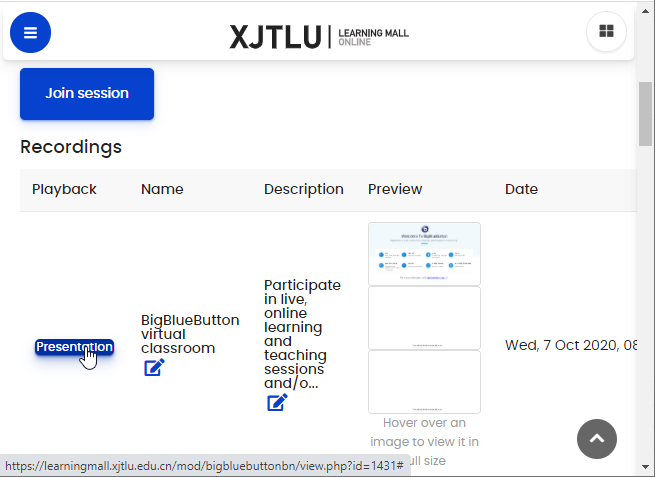
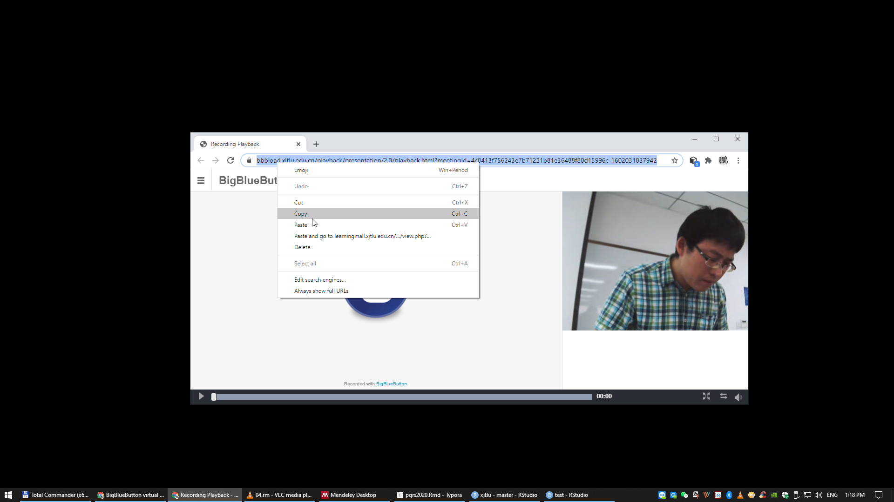

6 IT
6.1 Request hardware and software
- Requestor submits a completed IT Request Form to MITS to assess and confirm solution.
- IT Hardware/Rebuilding Request Form
- IT Software Request Form Note: the general IT Consumable/Digital Product is centralized by MITS budget such as keyboard, Mouse, Computer Camera, portable hard disk, laser pen……
- MITS submits an approved CMO01 form to the Sourcing and Purchasing Office.
- Sourcing and Purchasing Office complete their internal Purchasing Process.
- MITS assists by installing, supporting, or providing maintenance as needed.
6.2 VPN
XJTLU staff and students are able to access intranet resources off-campus by using a VPN (Virtual Private
Network).
Instructions for Windows 7/10:
- Double click the installation file “vpnclient-***.exe” file and run it for installation. During the installation, Select “PacketiX VPN Client”.
- After the installation, start the PacketiX VPN Client Manager.
- Double click “Add VPN Connection”. Click “Yes”. Click “OK”.
- The Virtual Network Adapter you created will then shown in the lower window, for example as shown below “VPN Client Adapter - VPN”, double click “Add VPN Connection” in the upper window again.
- Fill the details as shown below in the “New VPN Connection Setting Properties” and click “OK”.
- Setting Name: New VPN Connection (default name generated automatically)
- Host Name: vpn.xjtlu.edu.cn
- Port Number: 5555
- Virtual Hub Name: aaa (You must set ‘Host Name’ and ‘Port Number’ first)
- Auth Type: RADIUS or NT Domain Authentication
- User Name: Your username
- Password: Your password
- The “New VPN Connection” is shown in the upper window. Double click on “New VPN Connection”, the status will show as “Connected”.
- Right-click on “New VPN Connection” and click “Disconnect” when you want to leave the intranet. Click “Remove Startup Connection” to prevent automatic connection when you power on your computer.
Instructions for Mac OS:
Click “Network” in System Preferences.
Add an interface “VPN”.
Select VPN Type “L2TP over IPSec”, set up a Service Name “VPN (L2TP)”, then click “Create”.
Add Configuration Name “vpn-test”, then click “Create”.
Add the Server Address: “vpn.xjtlu.edu.cn” and “Your Account Name”, then click “Authentication
Settings…”
- Fill in your Password (optional) and Shared Secret “vpn”, then click “OK”.
- Click “Advanced…”.
- Make sure all the first 3 boxes in the “Options” tab are all ticked and click “OK”.
- Click “Apply”, then “Connect”. The connection will be established if you input your correct password in step 6, otherwise, a credential authentication window will pop up to ask for your password, fill with your password and then click “OK”.
- The Status will show as “Connected” if it authenticates successfully. Tick the box “Show VPN status
in menu bar”.
Instruction for IOS:
- Tap “Settings”.
- Tap “General”.
- Tap “VPN”.
- Tap “Add VPN Configuration”.
- Fill the details.
- Slide the button to the right for connecting.
- It will ask for password if you didn’t provide in step 5.
- The status will change as “Connected”
Instruction for Andriod:
The menu of android devices could be different according to different brands, here is an example for
HUAWEI phone.
- Find “VPN” in Wireless & networks.
- Tap “Add VPN network”.
- Fill the details and “SAVE”.
- Enter your credential and click “CONNECT”. The status will change to “Connected”.
6.3 How to make videos
6.4 Download BBB video recordings
The R package xjtlu provides a function which can download (and merge) the BBB video recordings including both the camera recordings and shared desktops. R must installed (see the book Learning R).
- Install and load the package xjtlu.
if (!require(remotes)) install.packages("remotes")
remotes::install_github("pzhaonet/xjtlu")
library("xjtlu")- Open your video page on bbb. Right click on the webcam recording window, and choose “Copy video address”.


- Run the following command in R. Replace
webcam_urlwith the hyperlink you just copied in your clipboard.
For example:
download_bbb("https://bbbload.xjtlu.edu.cn/presentation/4c0413f756243e7b71221b81e36488f80d15996c-1599613283607/video/webcams.webm")Two files will be downloaded in your work directory.
6.5 ICE
The ICE Support Clinic provides one-to-one guidance and assistance daily from 15:00-16:00. Click here.
Recordings of online training sessions are available here.
Online Quiz Standardisation Module teaches staff about the ICE’s Quiz activity.
Podcasts about the XJTLU Experience during COVID-19 for UoL Staff are available here.
As a reminder, several ICE and BigBlueButton user guides related to a variety of features are available via the Online Learning and Teaching Technology Support page. There is also an FAQ/Support forum.